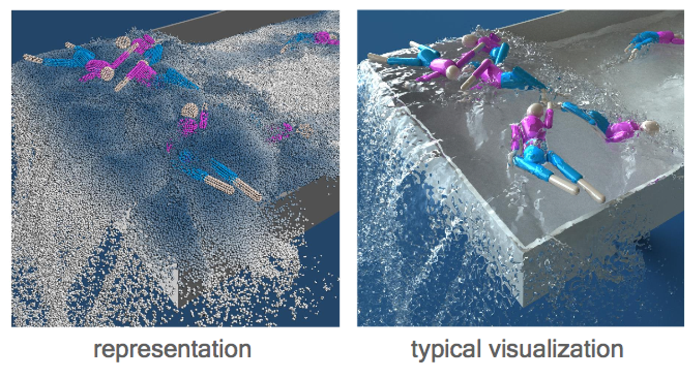
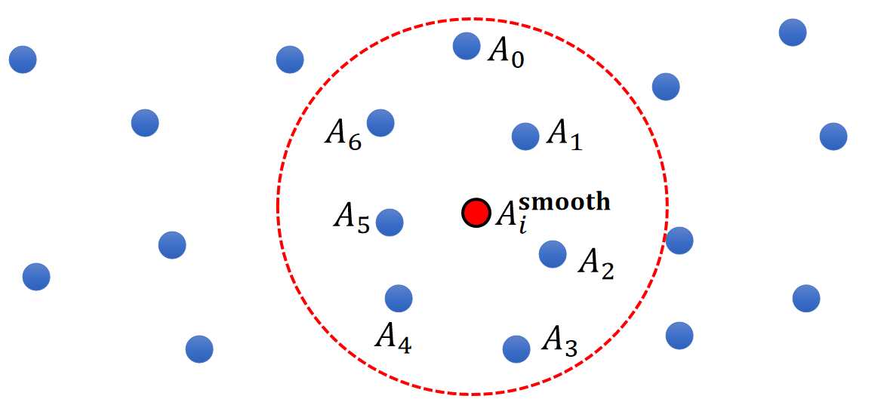
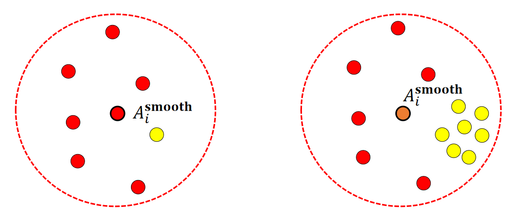
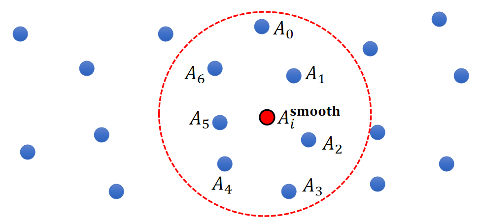
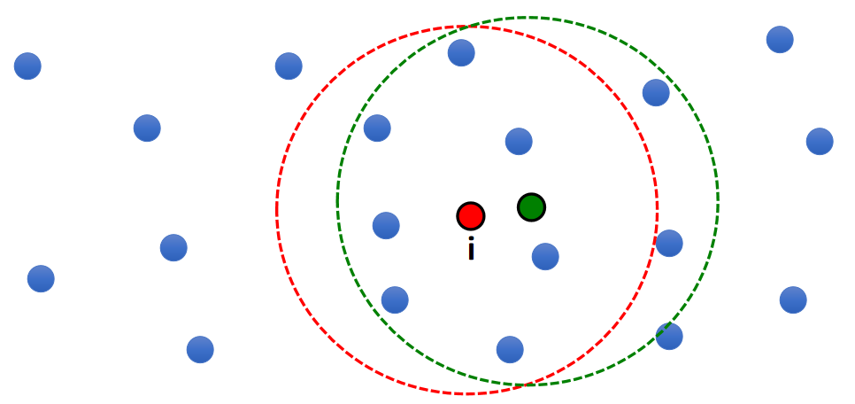
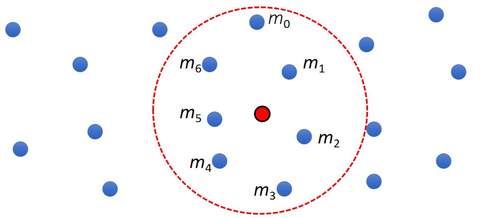
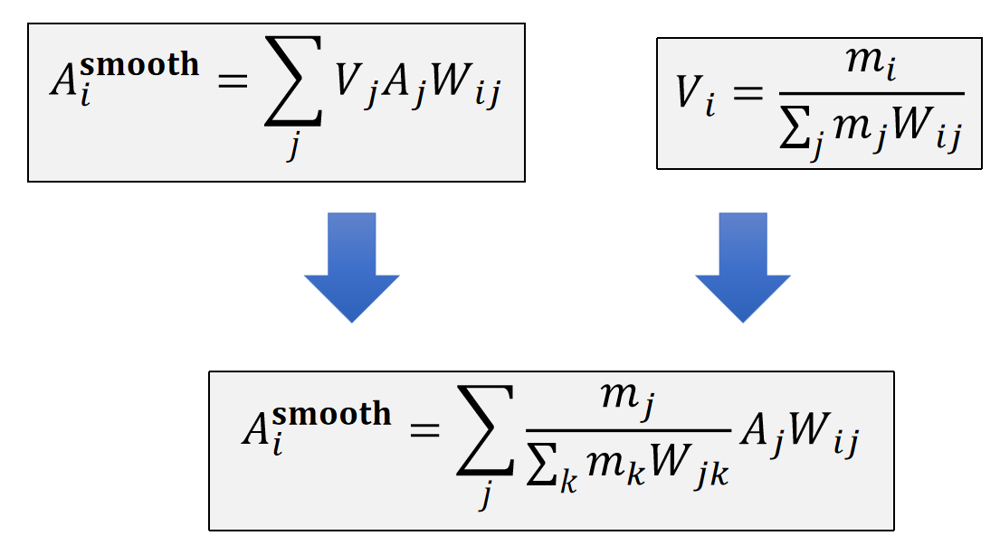
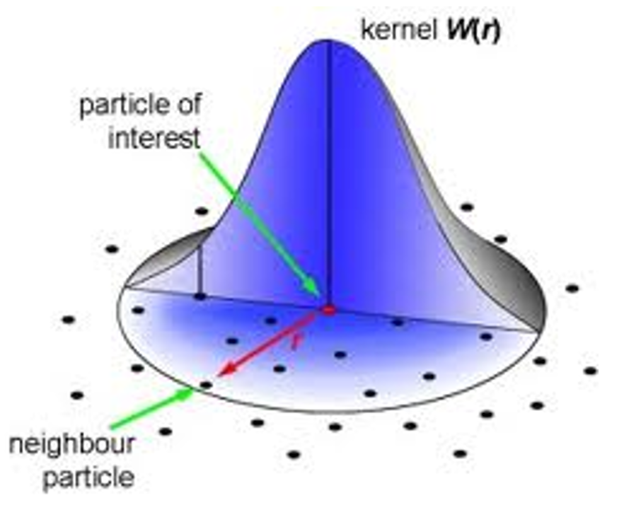

A SPH Model
✅ 搞一个模型，能够用于计算偏微分，把微分向量应用到方程上进行求解。
✅ SP:smooth particle
P4
A SPH Model
Consider a (Lagrangian) particle system: each water molecule is a particle with physical quantities attached, such as position \(\mathbf{x}_i\), velocity \(\mathbf{v}_i\), and mass \(m_i\).

✅ 用粒子来表达流体，物理变量附着在粒子上，粒子转化为三角网格再渲染，或直接渲染带透明贴图的粒子(游戏)。
P5
原理
- Suppose each particle j has a physical quantity \(A_j\).
- The quantity can be: velocity, pressure, density, temperature….
- How to estimate the quantity at a new location \(\mathbf{x}_i\)?
✅ 空间中有很多带有物理量的粒子，求任意位置上的物理量。这是插值问题，关键是要插值结果平滑。
模型
A Simple Model
$$ \begin{matrix} A_i^{\mathbf{smooth}}=\frac{1}{n}\sum _jA_j & \text{ For } ||\mathbf{x}_i−\mathbf{x}_j||<R \end{matrix} $$

存在的问题

✅ 取平均的方式没有考虑粒子的分布。
P7
A Better Model
- Let us assume each one represents a volume \(V_j\).
- So a better solution is:
$$ \begin{matrix} A_i^{\mathbf{smooth} }=\frac{1}{n}\sum_jV_jA_j & \text{ For } ||\mathbf{x} _i−\mathbf{x} _j||<R \end{matrix} $$

✅ 公式假设总球的体积是1，球内的粒子瓜分这些体积。所以\(\sum _jV_j=1\)
P8
存在的问题
- One problem of this solution:
$$ \begin{matrix} A_i^{\mathbf{smooth} }=\frac{1}{n}\sum_jV_jA_j & \text{ For } ||\mathbf{x} _i−\mathbf{x} _j||<R \end{matrix} $$
- Not smooth! (7 -> 9!)

✅ 微小的移动，圆内多了两个点，导致结果突变。
P9
Final Solution
- Final solution:
$$ \begin{matrix} A_i^{\mathbf{smooth}}=\sum _ j V_jA_jW_{ij} & \text { For } ||\mathbf{x} _ i− \mathbf{x} _j||< R \end{matrix} $$
- \(W_{ij}\) is called smoothing kernel.
- When \(||\mathbf{x} _ i − \mathbf{x} _ j||\) is large, \(W_{ij}\) is small.
- When \(||\mathbf{x} _ i−\mathbf{x} _ j||\) is small, \(W_{ij}\) is large.
P10
Particle Volume Estimation
- But how do we get the volume of particle \(i\)?
$$ V_i=\frac{m_i}{ρ_i} $$
$$ ρ_i^ \mathbf{smooth} =\sum _ j V_ j ρ_ j W _ {ij}= \sum _ jm_jW_{ij} $$
| $$V_i=\frac{m_i}{ρ_i^\mathbf{smooth} }=\frac{m_i}{∑_jm_jW_{ij}}$$ |
|---|

✅ 粒子在运动过程中，疏密会有变化，因此体积不是常数，要实时计算。
✅ 公式中的\(\rho \)不是指水的密度，而是粒子分布的密度。
✅ 把密度当作粒子的物理量。用同样的方法插出某个点的密度。
P11
Smoothed Interpolation – Final Solution
- So the actual solution is:

P12
Kernal函数
Kernal函数的作用
-
We can easily compute its derivatives:
- Gradient
$$ \begin{matrix} A_i^ \mathbf{smooth} = \sum _ jV_jA_ jW_ {ij} \quad & ∇A_i ^\mathbf{smooth} = \sum_jV_jA_j∇W_ {ij} \end{matrix} $$
- Laplacian
$$ \begin{matrix} A_i^ \mathbf{smooth} = \sum _ j V_ j A_ jW_ {ij} \quad & ∇A_i^\mathbf{smooth} = \sum_ jV_ jA_ j∇W_ {ij} \end{matrix} $$
❓ 为什么认为体积是常数？答：假设一个点的运动不影向周围邻居的体积。
✅ 对于当前点来说，周围粒子的物理量是常数，只有\(W_{ij}\)与当前点有关。
✅ 而\(W_{ij}\)来自于已知的kernel函数，其derivative也是已知的。
P13
A Smoothing Kernel Example

$$ W_{ij}=\frac{3}{2\pi h^3} \begin{cases} \frac{2}{3}-q^2+\frac{1}{2} q^3 \quad & (0\le q<1) \\ \frac{1}{6}(2-q)^3 \quad& (1\le q<2) \\ 0 \quad & (2\le q) \end{cases} $$
$$ q=\frac{||\mathbf{x} _i-\mathbf{x} _j||}{h} $$
\(h\) is called smoothing length
✅ smooth Kernal 有很多种，这种最常见。
P14
Kernel Derivatives
- Gradient at particle i (a vector)
$$ \nabla _ i W _ {ij} = \begin{bmatrix} \frac{\partial W _ {ij}}{\partial x _ i} \\ \frac{\partial W _ {ij}}{\partial y _ i} \\ \frac{\partial W _ {ij}}{\partial z _ i} \end{bmatrix} = \frac{\partial W_ {ij}}{\partial q} \nabla _ iq= \frac{\partial W _ {ij}}{\partial q} \frac{\mathbf{x} _ i-\mathbf{x} _ j}{|| \mathbf{x} _ i - \mathbf{x} _ j||h} $$
$$ q=\frac{||\mathbf{x} _i-\mathbf{x} _j||}{h} $$
$$ W_{ij}=\frac{3}{2\pi h^3} \begin{cases} \frac{2}{3}-q^2+\frac{1}{2} q^3 \quad & (0\le q<1) \\ \frac{1}{6}(2-q)^3 \quad& (1\le q<2) \\ 0 \quad & (2\le q) \end{cases} $$
$$ \frac{\partial W_{ij}}{\partial q} =\frac{3}{2\pi h^3} \begin{cases} -2q+\frac{3}{2}q^2 \quad & (0\le q<1) \\ -\frac{1}{2}(2-q)^2 \quad& (1\le q<2) \\ 0 \quad & (2\le q) \end{cases} $$
P15
Kernal Laplacian
| $$\Delta _i W _ {ij}= \frac{\partial^2 W _ {ij}}{\partial x_i^2}+ \frac{\partial^2 W _ {ij}}{\partial y_i^2} + \frac{\partial^2 W _ {ij}}{\partial z_i^2}= \frac{\partial^2 W _ {ij}}{\partial q^2}\frac{1}{h^2} + \frac{\partial W _ {ij}}{\partial q} \frac{2}{h} $$ |
|---|
$$ \frac{\partial W_{ij}}{\partial q} =\frac{3}{2\pi h^3} \begin{cases} -2q+\frac{3}{2}q^2 \quad & (0\le q<1) \\ -\frac{1}{2}(2-q)^2 \quad& (1\le q<2) \\ 0 \quad & (2\le q) \end{cases} $$
$$ \frac{\partial^2 W_{ij}}{\partial q^2} =\frac{3}{2\pi h^3} \begin{cases} -2+3q \quad & (0\le q<1) \\ 2-q \quad& (1\le q<2) \\ 0 \quad & (2\le q) \end{cases} $$
本文出自CaterpillarStudyGroup，转载请注明出处。
https://caterpillarstudygroup.github.io/GAMES103_mdbook/